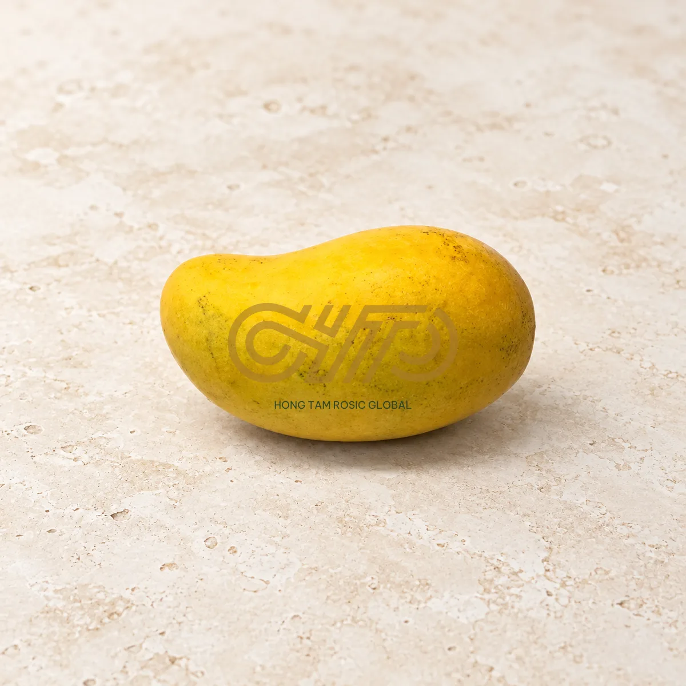
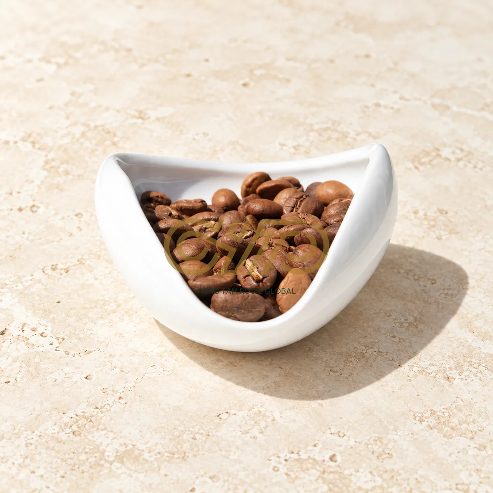
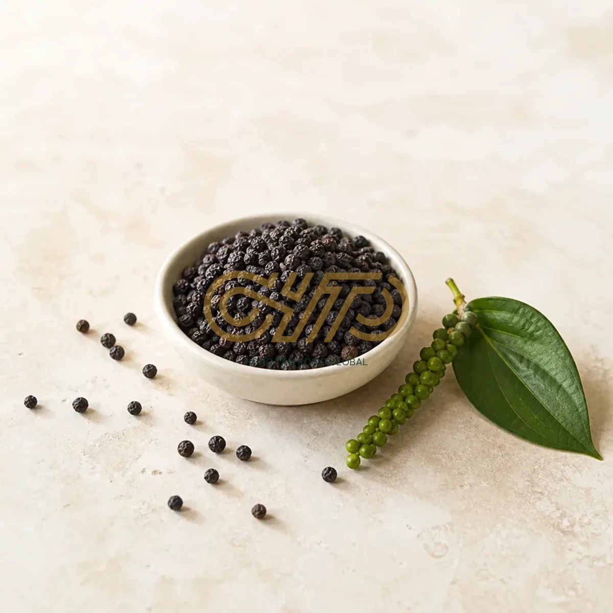

ROSIC VR5 · Đối chiếu nhận diện
Đề xuất để duyệt, chưa coi là nhận diện đã được khách phê duyệt. Khối trước tái hiện cấu trúc header ở đầu phiên làm việc; khối sau thể hiện tỷ lệ và font đề xuất VR5.
Trước
Chữ ROSIC vector cũ, header chưa có tagline.
Đề xuất VR5
ROSICManufacturing with Heart, Trading with Vision
Căn giữa ba tầng; ROSIC và tagline cùng Manrope, chữ không dấu.
Màu nhận diện
#A77C30#193B30#F4D780
Ba mẫu watermark cần duyệt
Logo trung tâm 60% và dòng thông tin được đóng vào pixel. Hai ảnh xoài/cà phê đã đổi nền bằng AI; ảnh tiêu dùng nền đá be sẵn có. Cần duyệt độ đậm và tính đúng của ảnh trước công bố.



Mẫu sử dụng pipeline xử lý ảnh thật trên máy. Ảnh gốc và bản không watermark được giữ riêng.